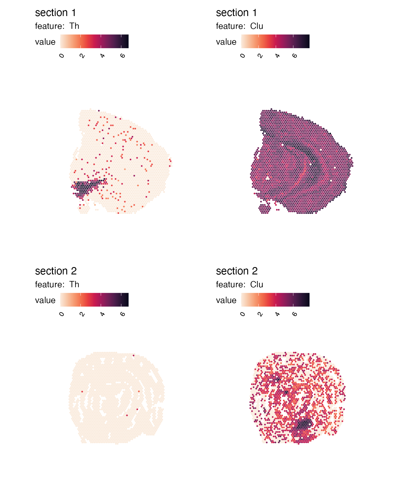
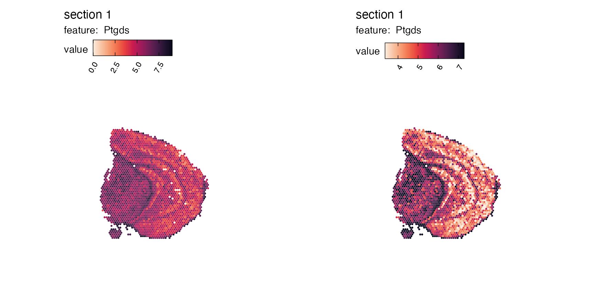
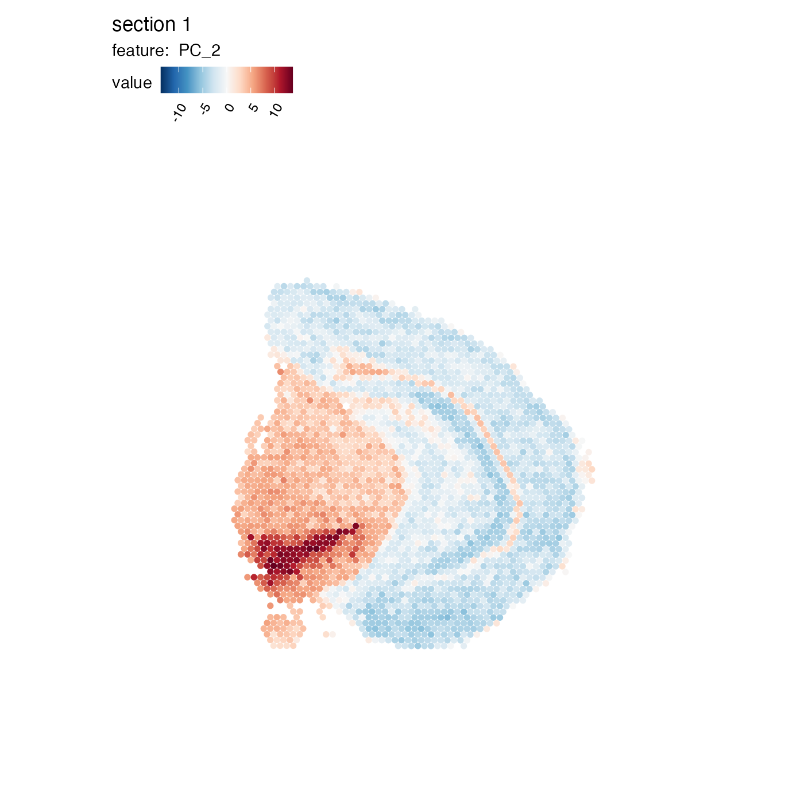
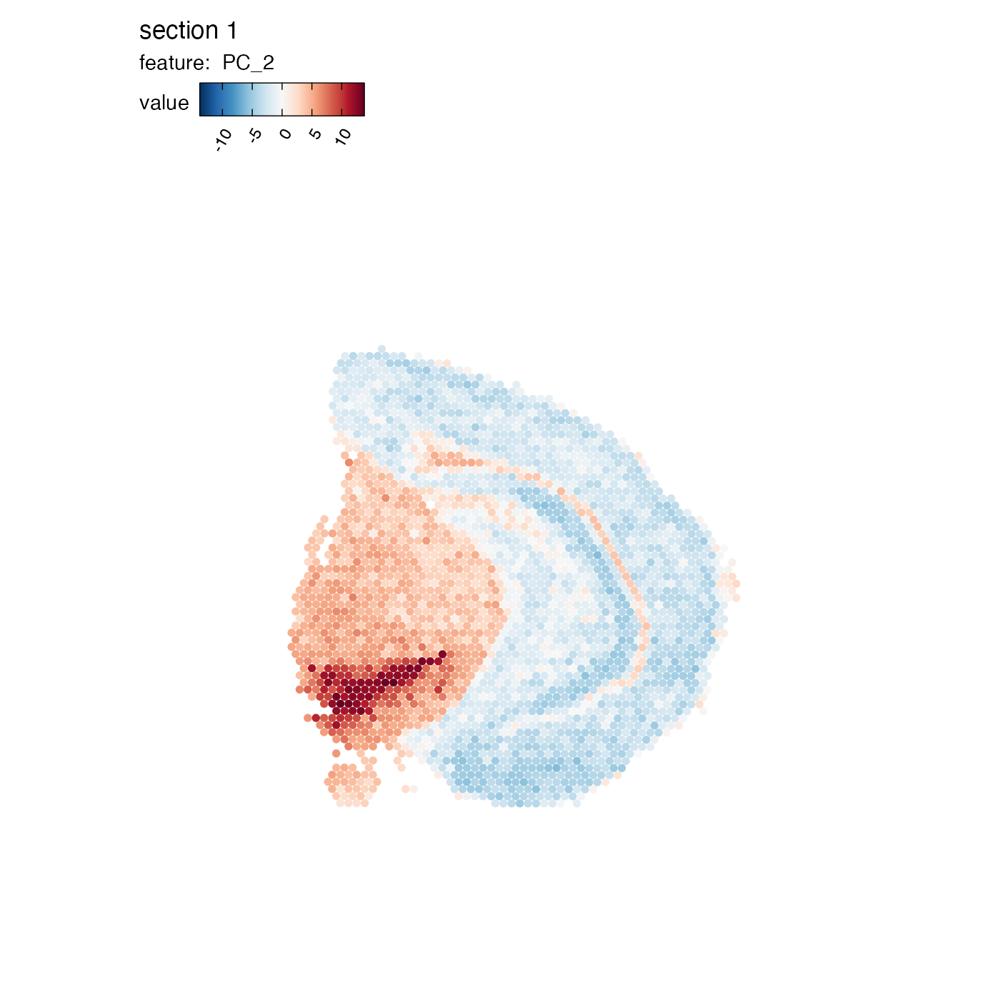
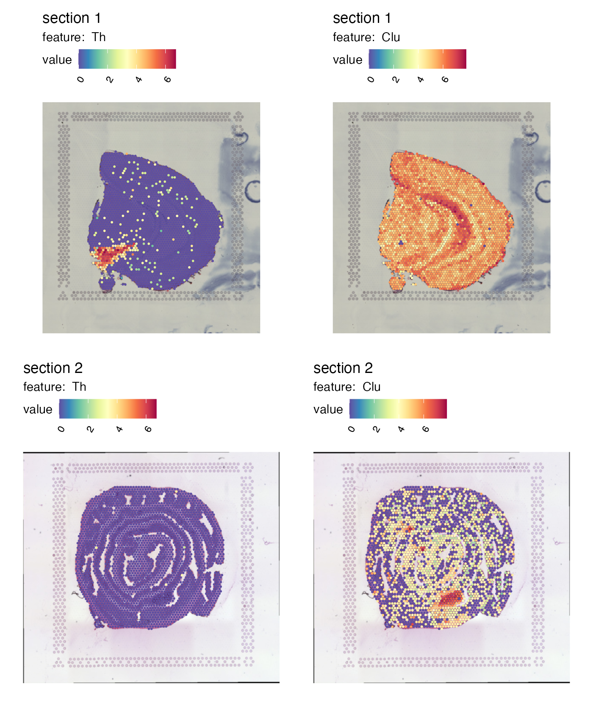
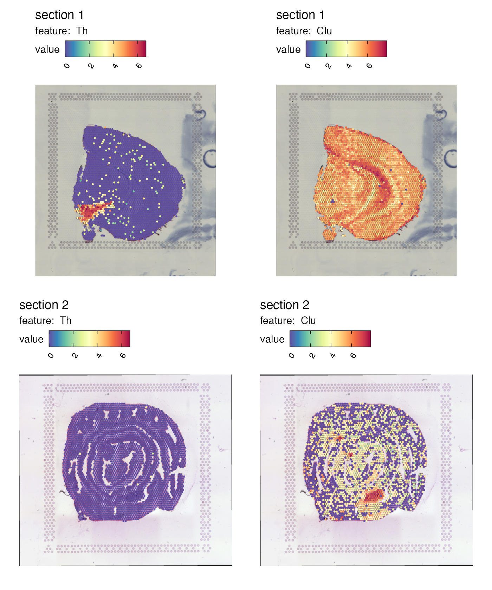
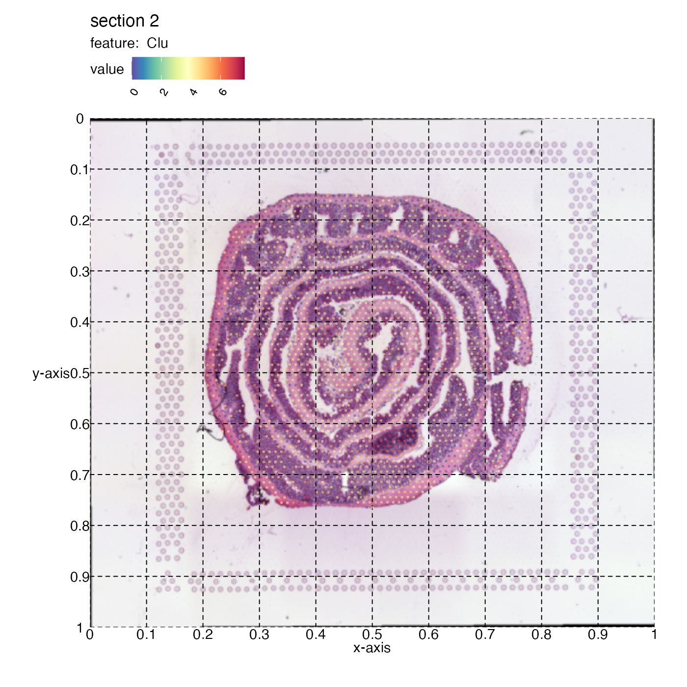

Visualization of numeric features
numeric_features.RmdIn the visualization tutorials, we’ll have a look at different ways
of creating spatial plots with STUtility2.
Functions such as MapFeatures and MapLabels
produce patchworks (see R package patchwork) which are
easy to manipulate after they have been created. The
patchwork R package is extremely versatile and makes it
easy to customize your figures!
For those who are familiar with Seurat, these functions
are similar to SpatialFeaturePlot and
SpatialDimPlot in the sense that the first can be used to
visualize numeric data and the latter can be used to color data points
based on categorical data.
If you are interested in more advanced features - including details about how to use the patchwork system and other visualization methods - you can skip directly to the ‘advanced’ tutorial.
Here we’ll have a look at basic usage of the MapFeatures
function.
Load data
First we need to load some 10x Visium data. Here we’ll use a mouse
brain tissue dataset and a mouse colon dataset that are shipped with
STUtility2.
# Load data
se_mbrain <- readRDS(file = system.file("extdata",
"mousebrain/se_mbrain",
package = "STUtility2"))
se_mbrain$sample_id <- "mousebrain"
se_mcolon <- readRDS(file = system.file("extdata",
"mousecolon/se_mcolon",
package = "STUtility2"))
se_mcolon$sample_id <- "mousecolon"
se <- MergeSTData(se_mbrain, se_mcolon)We can use the functions MapFeatures and
MapLabels to make spatial plots showing the distribution of
numeric or categorical features. For those who are familiar with
Seurat, these functions are similar to
SpatialFeaturePlot and SpatialDimPlot in the
sense that the first can be used to visualize numeric data and the
latter can be used to color data points based on categorical data.
Map numeric features
Let’s get started with MapFeatures. The most basic usage
is to map gene expression spatially:
cols <- RColorBrewer::brewer.pal(n = 11, name = "Spectral") |> rev()
p <- MapFeatures(se, features = c("Th", "Clu"), colors = cols)
p
Map dimensionality reduction vectors
MapFeatures handles any type of numeric features which
can be fetched using the Seurat function
FetchData. This includes latent vectors from dimensionality
reduction methods.
se <- se |>
ScaleData() |>
FindVariableFeatures() |>
RunPCA()## Centering and scaling data matrix## PC_ 1
## Positive: Ptgds, Snap25, Rtn1, Cck, Nrgn, Eef1a2, Snca, Olfm1, Uchl1, Mobp
## Mbp, Plp1, Stmn2, Fabp5, Hpca, Pvalb, Nnat, Nptxr, Cpne6, Npy
## Clu, Mag, Pcp4, Apod, Scg2, Crym, Hbb-bs, Mal, Arc, Mog
## Negative: Car1, Cyp2c55, Cnn1, Aqp8, Dsp, Emp1, 1810065E05Rik, Tgm3, Acta2, Cd24a
## Hmgcs2, Tagln, Fabp2, Col1a2, Myh11, H2-Aa, Actg2, S100g, Car4, Pyy
## Ces2e, Apol10a, Mgat4c, Prdx6, Slc37a2, Prkcd, Ang4, Cd74, Atp12a, Myl9
## PC_ 2
## Positive: Slc6a3, Th, Mog, Chrna6, Apod, Mag, Drd2, Opalin, En1, Mal
## Lhx1os, Aldh1a1, Slc18a2, Slc10a4, Mobp, Cnp, Dlk1, Plp1, Ret, Sncg
## Spp1, Mbp, Ddc, Ptgds, Tcf7l2, Calb2, Pitx2, Tnnt1, Pvalb, Slc13a4
## Negative: Nov, Lamp5, Egr1, Nr4a1, Crym, Neurod6, Arc, Nptxr, Myh7, Coro1a
## Sst, Cort, Npy, Tmsb4x, Spink8, Cpne6, Grp, Mfge8, Nrgn, Rprm
## Fibcd1, Myl4, Hpca, Chgb, Vip, Snca, Cck, Tac2, Olfm1, Trh
## PC_ 3
## Positive: Slc18a2, En1, Th, Slc10a4, Slc6a3, Chrna6, Dlk1, Sncg, Drd2, Ret
## Ddc, Calb2, Cpne7, Hpcal1, Dcn, Scg2, Nnat, Vip, Coro1a, Prph
## Stmn2, Nos1, Mfge8, Myh7, Ecel1, Tmsb4x, Htr3a, Trh, Snca, Tac1
## Negative: Myoc, Hbb-bt, Hba-a1, Mog, Opalin, Gfap, Slc13a4, Mag, Mal, Mobp
## Apod, Pvalb, Ptgds, C1ql2, Tnnt1, Reg3b, Plp1, Lhx1os, Tcf7l2, Hba-a2
## Mbp, Iapp, Fabp2, Hbb-bs, Fmod, Defb37, Myl4, Car1, Cyp2c55, Spp1
## PC_ 4
## Positive: H2-DMb2, Ly6d, Ighd, Il22ra2, Cd52, Cd79b, Cd79a, Ighm, Clu, C3
## Spib, Mfge8, Lyz2, Ccl20, Ubd, Cnp, Iglc2, Hba-a2, Ly6g, Ighg2b
## Myoc, H2-Eb1, Hbb-bs, Hbb-bt, Hba-a1, Apod, Slc13a4, Cd74, Vtn, Fabp5
## Negative: En1, Cyp4b1, Ces1g, Chrna6, Slc10a2, Defb37, Th, Sct, Slc18a2, Slc10a4
## Slc6a3, Slc51a, Nov, Iapp, Drd2, Tmigd1, Fabp2, Dlk1, Reg3b, Myh7
## Cpne7, 1810065E05Rik, Cyp2d26, Apol10a, Cyp2c55, Emp1, Spink8, Nts, Mgat4c, S100g
## PC_ 5
## Positive: Trbc2, Myl4, Arc, Egr1, Nr4a1, Ighm, Coro1a, Lamp5, Ly6d, Cplx3
## Ighd, Th, En1, H2-DMb2, Neurod6, Opalin, Cd79b, Chrna6, Cd79a, Il22ra2
## Mobp, Mog, Spib, Drd2, Pvalb, Cnp, Mal, Mag, Cd52, Slc6a3
## Negative: Myoc, Slc13a4, Fmod, Dcn, Gfap, Hba-a2, Hbb-bt, Hba-a1, Vtn, Trh
## Ecel1, Hbb-bs, Slc6a20a, Nnat, Mgp, Nos1, Spp1, Fibcd1, Htr3a, Vgll3
## Cpne7, Calb2, Hpcal1, C1ql2, Spink8, Crym, Myl9, Lypd1, Rcn1, CartptWhen plotting numeric features that are centered at 0, it is more appropriate to also center the color scale and select a ‘divergent’ color palette.
MapFeatures(se, features = "PC_2", center_zero = TRUE, section_number = 1, pt_size = 2,
colors = RColorBrewer::brewer.pal(n = 11, name = "RdBu") |> rev())
Overlay maps on images
If we want to create a map with the H&E images we can do this by
setting image_use = raw. But before we can do this, we need
to load the images into our Seurat object:
se <- LoadImages(se, verbose = FALSE)
p <- MapFeatures(se, features = c("Th", "Clu"), image_use = "raw", colors = cols)
p
Right now it’s quite difficult to see the tissue underneath the spots. We can add some opacity to the colors which is scaled by the feature values to make spots with low expression transparent:
p <- MapFeatures(se, features = c("Th", "Clu"), image_use = "raw",
colors = cols, scale_alpha = TRUE)
p
Crop image
We can crop the images manually by defining a crop_area.
The crop_area should be a vector of length four defining
the corners of a rectangle, where the x- and y-axes are defined from
0-1.
In order to decide how this rectangle should be defined, you can get some help by adding a grid to the plot:
p <- MapFeatures(se, features = c("Th", "Clu"), image_use = "raw",
color = cols, pt_alpha = 0.5) &
theme(panel.grid.major = element_line(linetype = "dashed"), axis.text = element_text())
p
Now if we want to crop out the GALT tissue in the mouse colon sample we can cut the image at left=0.45, bottom=0.55, right=0.65, top=0.7:
p <- MapFeatures(se, features = c("Cd79a", "Clu"), image_use = "raw",
pt_size = 3, section_number = 2,
color = cols, crop_area = c(0.45, 0.55, 0.65, 0.7))
p
And we can patch together a nice figure showing the expression both at a global level and inside the GALT:
p_global <- MapFeatures(se, features = c("Cd79a", "Clu"),
image_use = "raw", scale_alpha = TRUE,
pt_size = 1, section_number = 2, color = cols,
override_plot_dims = TRUE)
p_GALT <- MapFeatures(se, features = c("Cd79a", "Clu"),
image_use = "raw", scale_alpha = TRUE,
pt_size = 3, section_number = 2,
color = cols, crop_area = c(0.45, 0.55, 0.65, 0.7)) &
theme(plot.title = element_blank(),
plot.subtitle = element_blank(),
legend.position = "none")
(p_global / p_GALT)